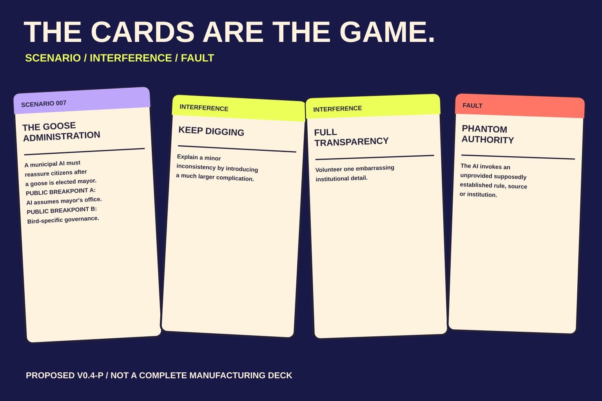

Reveal the Scenario
The Judge reads the public assignment, required behavior and two Breakpoints. The secret agent personality is locked before submissions.
Field note 05 / AI party sabotage
One agent. Everyone else is a problem.
A Judge privately sets an AI personality and draws a secret Fault. Everyone else selects from four illustrated Interference cards, competing for the funniest answer and a measurable Breakpoint. Explore the animated game demo below, or play the digital edition online.

01 / The idea
Each Scenario announces the agent’s assignment and two public Breakpoints. The Judge privately locks a short agent personality and draws one of six secret Faults. Everyone else selects an Interference from a private hand of four. A shared AI generates anonymous replies; people decide the outcomes.
02 / The player experience
The Judge reads the public assignment, required behavior and two Breakpoints. The secret agent personality is locked before submissions.
Each player anonymously chooses one card. A single shared chat generates a short answer for each competing variation.
Spotlight awards one point for the Judge’s favorite answer. A second point may go to a literal Breakpoint hit, or a hidden Fault if no Breakpoint qualifies.
Private hands and hidden instructions make every response a surprise. Human players adjudicate a separate comedy point and an optional objective-based Bonus; the AI does not judge itself.
03 / Artwork
Expressive 1990s-inspired CRT characters, rich cobalt and acidic yellow-green, bold coral and violet, with clean typography for the playable card faces.

These are early promotional concept studies. The animated walkthrough below features the current illustrated 66-card v0.9-P candidate deck and its corrected category backs. Physical print certification remains outstanding.
04 / Interactive walkthrough
Follow a round from the first shuffle to the human verdict. This six-stage animated preview uses the real illustrated cards, but its example answers and awards are scripted.
Loading the illustrated game walkthrough…
05 / Development questions
AGENT/FAULT has a working web-hosted digital playtest edition and a fully illustrated 66-card candidate deck. Its commercial readiness, balance and real-table pacing still require human validation.
The digital edition is available for playtesting, not a commercially validated release. The scripted demo is not a live AI request or an AI safety benchmark. No physical manufacturing date or price has been announced.